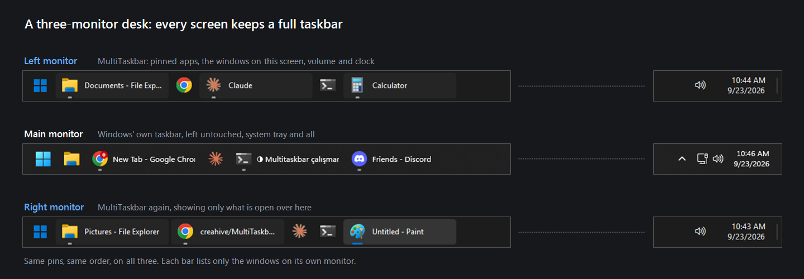

A full taskbar on every monitor for Windows 11. Pinned apps, window previews, volume and a clock on your second and third screen.
Free and open source (MIT) · a single portable exe · no installer, service or telemetry

On a secondary monitor Windows 11 gives you a reduced taskbar: no system tray, no volume icon, no calendar, and pinned apps only if you also accept every window showing up on every screen. MultiTaskbar hides those bars while it runs and draws a complete one in their place.
The Start button and the same pins, in the same order as your main taskbar. Pin or unpin as usual and the bars follow.
With their titles, following the Windows setting for combining taskbar buttons. A window never shows up on every bar.
Hover an app to see its windows, drawn by the desktop compositor itself. Click one to switch, middle-click to close it.
Recent files, the window list, and Explorer's own entries: Run as administrator, Properties, Unpin from taskbar.
Click for a volume slider or the month, scroll to change either, and a show-desktop strip in the far corner.
Follows your light or dark theme and accent color, scales to each monitor's DPI, and hides for full-screen apps.
MultiTaskbar.exe from the button above.%LOCALAPPDATA%\Programs\MultiTaskbar.Windows SmartScreen may warn about the download, because the exe is not code-signed. Choose More info → Run anyway, or build it yourself: the whole app is one C# file, compiled by the compiler that already ships with Windows.
No. The main monitor is untouched. A Windows taskbar on another monitor is hidden only while a MultiTaskbar bar is up on that same monitor, and comes back on exit, on a crash, or if the process is killed.
From its tray icon, from Settings → Apps, or by running MultiTaskbar.exe --uninstall.
It restores the taskbars, removes its startup entry and settings, and deletes itself.
Those are paid suites that also add multi-monitor taskbars. MultiTaskbar does one thing, is free and open source, and is a single exe of about 56 KB.
Yes, though Windows 10's own multi-monitor taskbar is already closer to complete, so there is less to gain.
Nothing but a daily question to GitHub asking whether a newer release exists, which you can turn off. No accounts, no analytics.